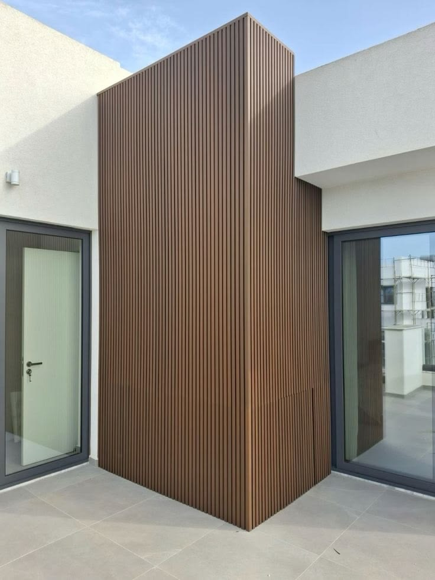
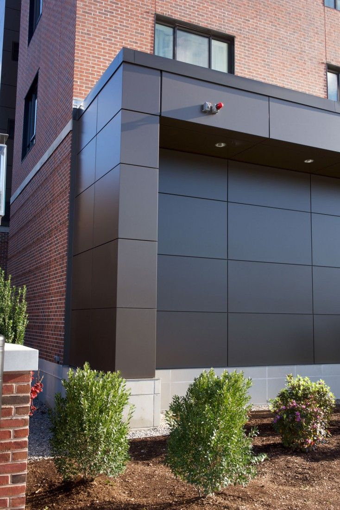
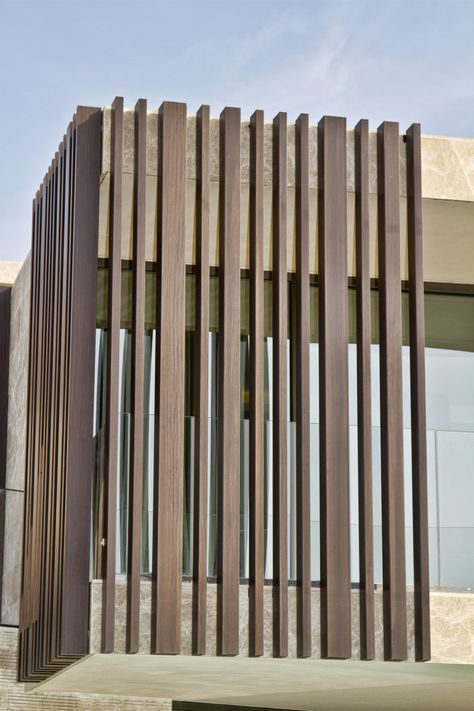
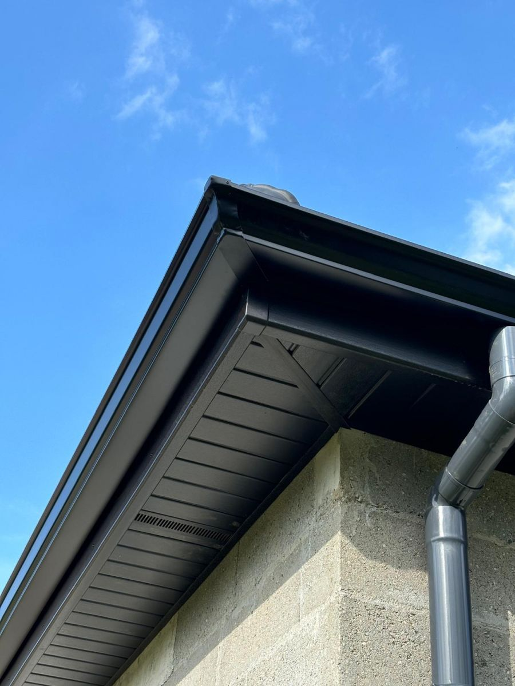

تشطيب معتمد
كسوة الخشب المركب المقاوم (Bois Composite)
جمالية ودفء الخشب الطبيعي بدون الحاجة لأي صيانة، مقاوم للشمس والرطوبة والحشرات.
طلب هذا الخيار ←امنحوا مبناكم أو فيلتكم مظهراً معمارياً عصرياً وأنيقاً بفضل حلول تكسية الواجهات المهواة. ألواح الخشب المركب المقاومة للشمس، وألواح الألمنيوم المركبة (Alucobond)، وكواسر الشمس المعمارية تضفي فخامة استثنائية وتساهم في العزل الحراري للمبنى.
 الدار البيضاء وكافة مدن المغرب
الدار البيضاء وكافة مدن المغرب
نقدم باقة متكاملة من الحلول المعمارية المنفذة بأعلى درجات الدقة على أيدي أمهر الحرفيين المتخصصين.

جمالية ودفء الخشب الطبيعي بدون الحاجة لأي صيانة، مقاوم للشمس والرطوبة والحشرات.
طلب هذا الخيار ←
واجهات معمارية حديثة مستوية وخفيفة الوزن بمظهر معدني راقٍ للشركات والفلل المعاصرة.
طلب هذا الخيار ←
شفرات عمودية توفر الظل والخصوصية وتمنح الواجهة طابعاً معمارياً مبهراً.
طلب هذا الخيار ←
تشطيب جوانب الأسطح وشرفات الفيلات بمقاطع معالجة ومقاومة لتقلبات الجو.
طلب هذا الخيار ←منهجية هندسية واضحة تضمن التسليم في الموعد المحدد وبأعلى معايير الجودة دون أي مفاجآت في الميزانية.
زيارة ميدانية دقيقة لموقع المشروع، فحص الجدران والأسطح، وأخذ القياسات التفصيلية وإعداد مقايسة دقيقة في 48 ساعة.
تغليف وحماية كافة الأثاث والأرضيات والممرات، تنظيف ومعالجة التشققات، وتأمين موقع الورشة بالكامل.
تطبيق المواد الأصلية المعتمدة بواسطة فنيين ذوي خبرة طويلة مع الالتزام التام بفترات الجفاف والمعايير الهندسية.
فحص نهائي دقيق لكافة التفاصيل بالإضاءة الكاشفة، تنظيف شامل لمكان الورشة، وتسليم محضر رسمي بدون أي ملاحظات.
ما يميز مقاولتنا في كل ورش بناء وتهيئة وتجديد نتولى قيادته بالمغرب.
شراكات مع كبرى الشركات العالمية: Sika و Jotun و Weber لضمان أعلى مستويات المتانة والمقاومة.
فرق عمل نظامية متخصصة في كل حرفة، دون مناولة عشوائية، تحت إشراف مباشر لمدير المشروع.
جدول زمني تعاقدي ملزم مع تنسيق متواصل بين الحرفيين لتفادي أي تأخير أو توقف في سير الأشغال.
ضمان حسن التنفيذ والمطابقة وخدمة ما بعد التسليم لراحتكم وطمأنينتكم التامة لسنوات قادمة.
إجابات تقنية واضحة من مهندسينا ومدراء المشاريع حول تفاصيل الأشغال.
تصل مدة مقاومته لأكثر من 20 عاماً ضد التفسخ والتشقق وتغير اللون، دون الحاجة لأي دهان دوري أو صيانة معقدة.
نعم، طبقة الهواء المهواة بين الجدار والكسوة تطرد حرارة الصيف ويمكن تعزيزها بعازل الصوف الصخري لشتاء دافئ وصيف معتدل.
نستخدم حصرياً ألواحاً ذات حشوة معدنية مقاومة للاشتعال مطابقة لأعلى المعايير الدولية للسلامة والوقاية من الحرائق.
تثبت على هيكل ألمنيوم أو فولاذ مجلفن مقاوم للصدأ بواسطة كلبسات خفية غير مرئية لمظهر خارجي أملس وأنيق.
تواصلوا مع مكتبنا التقني اليوم لمناقشة دفتر التحملات وتحديد موعد زيارة معاينة لمشروعكم خلال 48 ساعة بالدار البيضاء وكافة المدن المغربية.